/* jason-salavon - proofs */
12 plates. Deterministic overlays rendered by the composition-analysis skill.
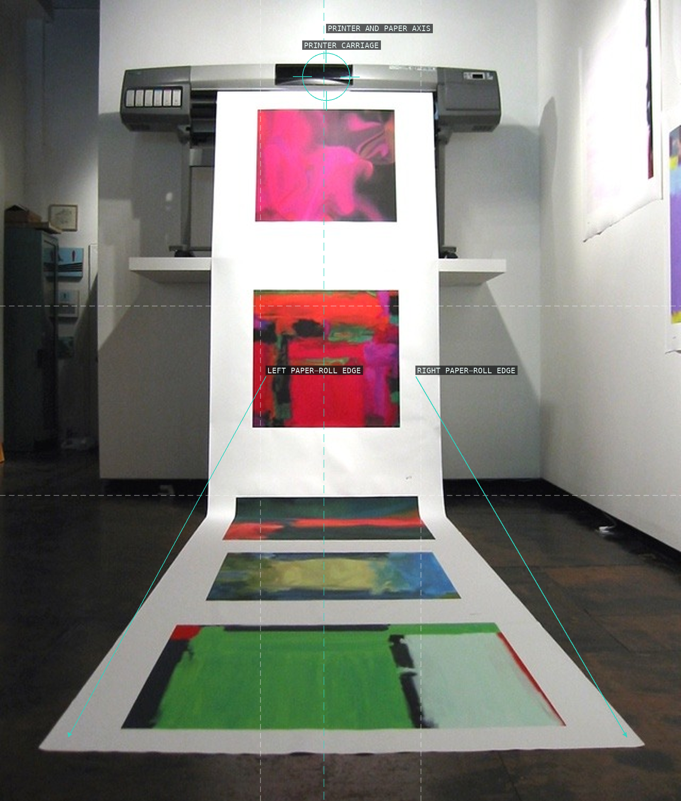
01-golem-printer
The installation documentation uses a centered printer and unspooling paper to turn generated pictures into a vertical procession.
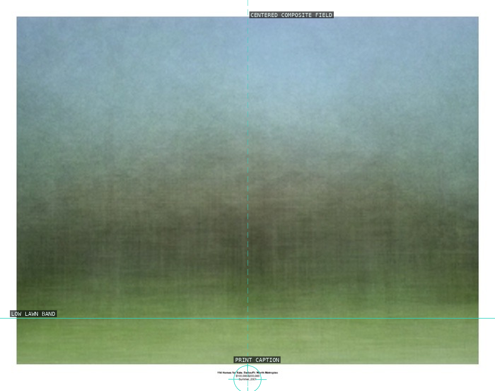
02-homes-dallas-fort-worth
A soft centered landscape is presented as a print, with the small caption reinforcing its typological status.
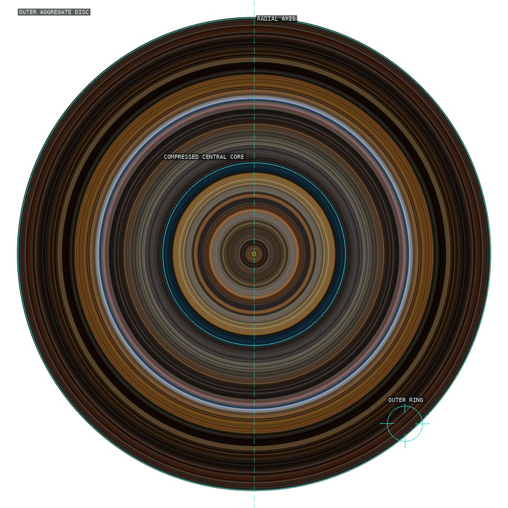
03-emblem-apocalypse-now
Sampled film frames become a centered, concentric emblem rather than a scene.
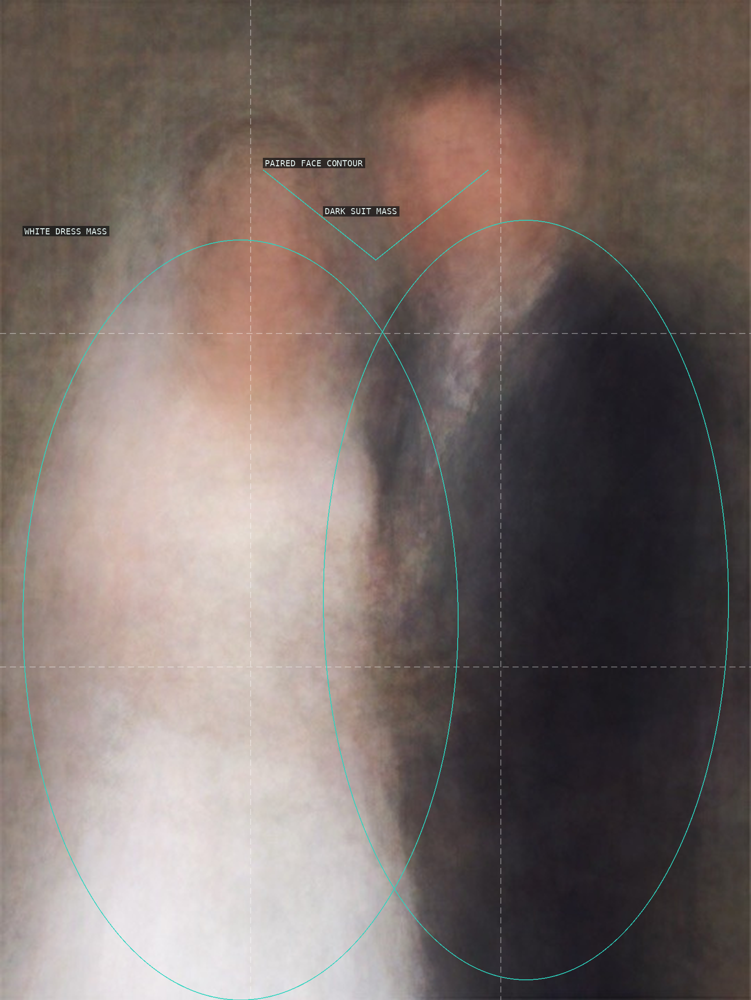
04-100-special-moments-newlyweds
Two facial masses and opposed pale and dark body masses remain legible while the individual photographs dissolve.
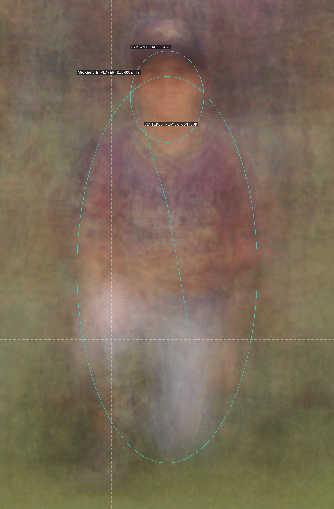
05-100-special-moments-little-leaguer
A conventional centered sports portrait survives the averaging as a single softened figure.
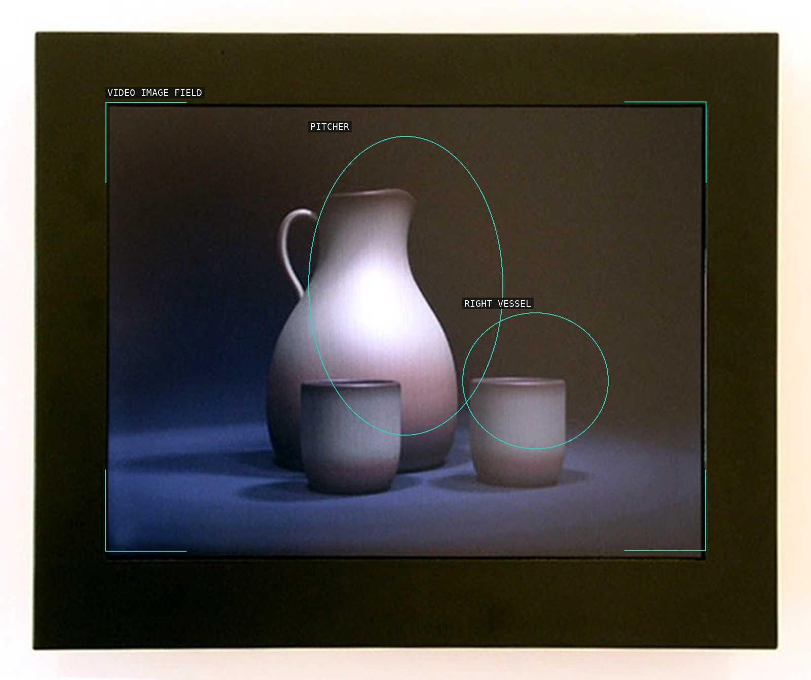
06-still-life-speed-of-sunrise
The documented display frame contains a centered generated still life, with its base held low in the field.
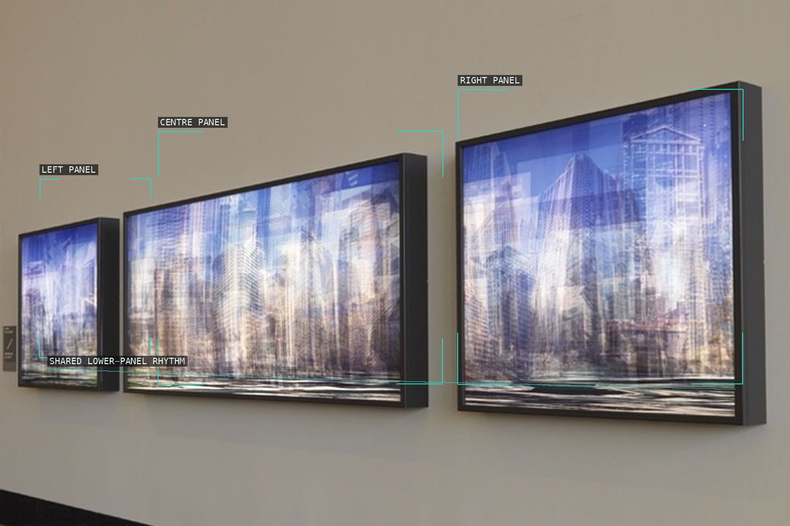
07-the-loop-chicago
Three photographed lightboxes stage a transparent city as a continuous lateral corridor.
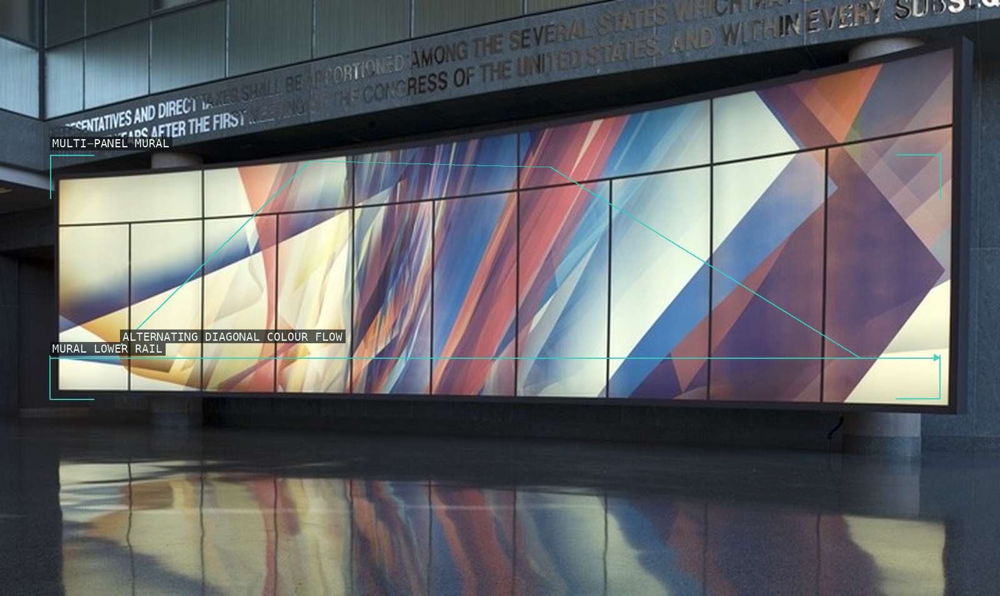
08-american-varietal-us-population
The installation's long panel array turns data into an angled sequence of colour fields.
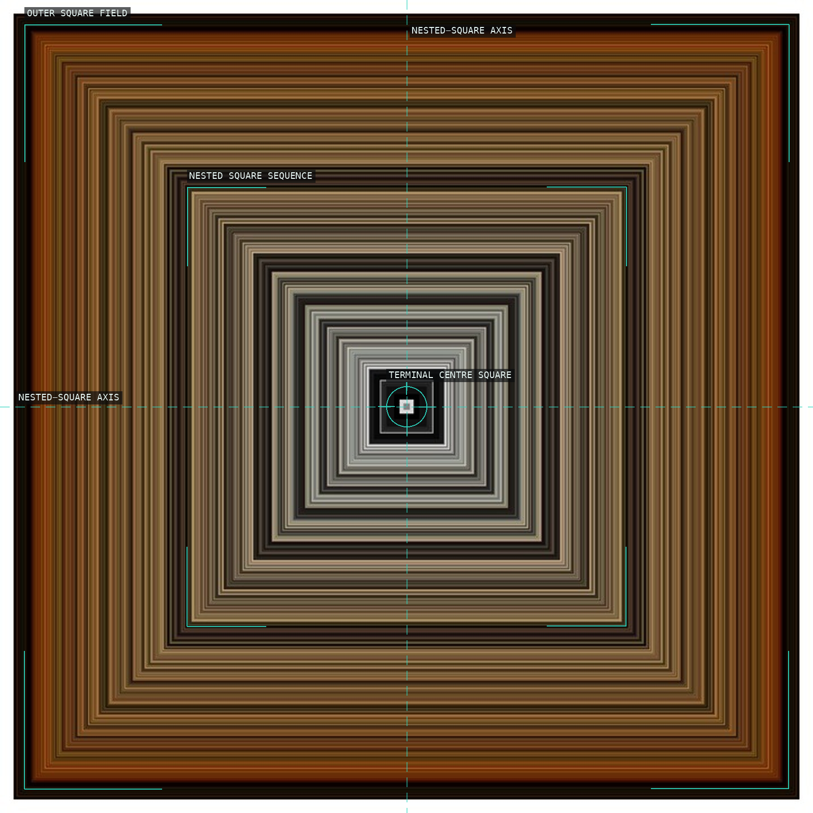
09-baroque-painting
Repeated square borders carry a palette system inward to a small central aperture.
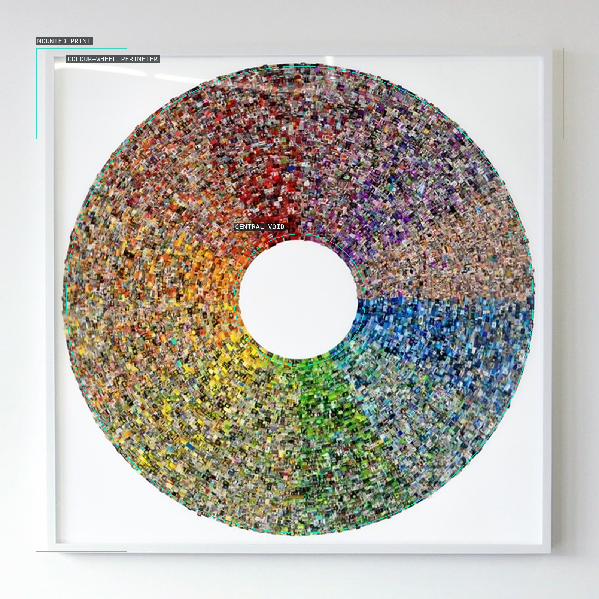
10-color-wheel
Small search-result images are ordered as a ring with a deliberately empty center.
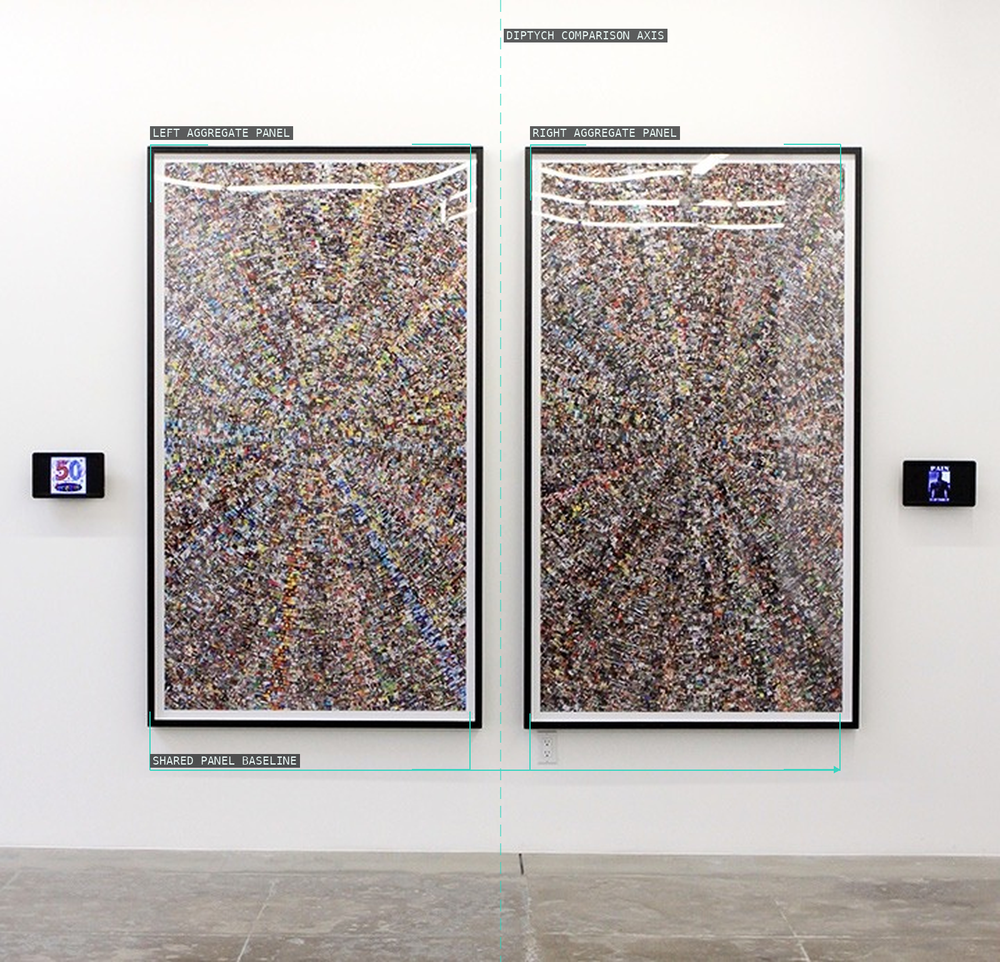
11-good-and-evil-12
Two tall, closely spaced image fields make the binary search system read as a paired installation.
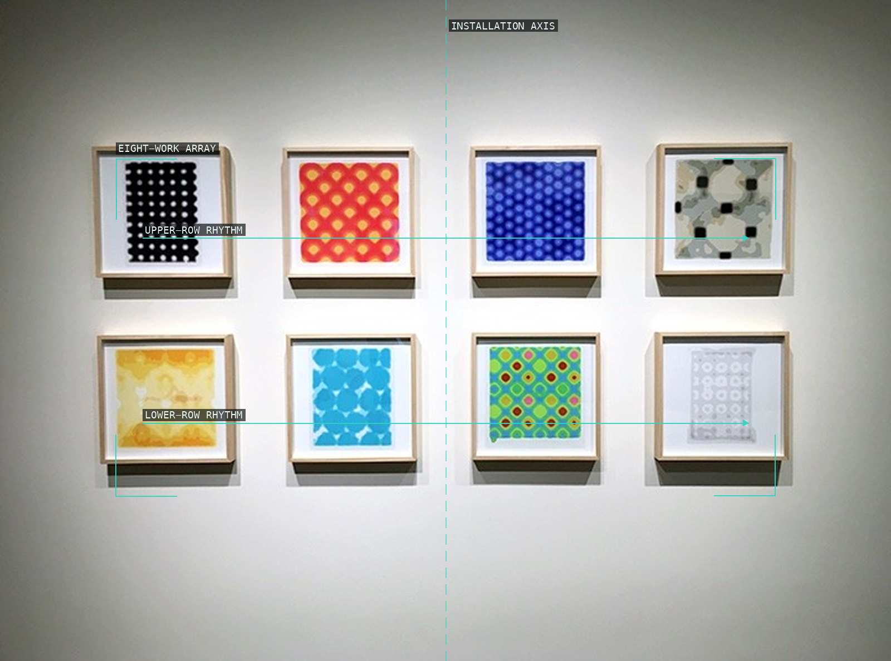
12-automatic-pattern-for-you
A gridded display lets distinct procedural patterns read as one ordered field.